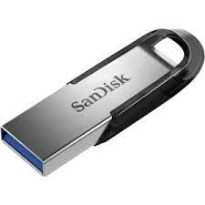

Una memoria USB,también llamada llave USB,memory stick o pen drive por su forma habitual (USB flash drive y pen drive respectivamente en inglés)
es un pequeño dispositivo de almacenamiento que utiliza una memoria flash para guardar información sin necesidad de pilas.Los pendrives son resistentes
a los pequeños golpes y al polvo que afectan a otras formas anteriores de almacenamiento portátil, como los CD y los disquetes.